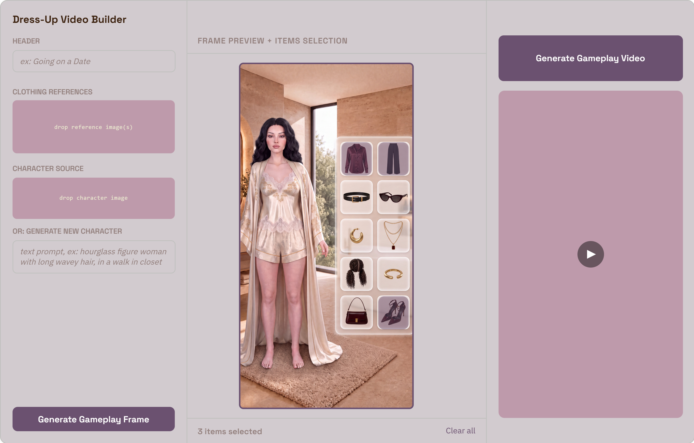
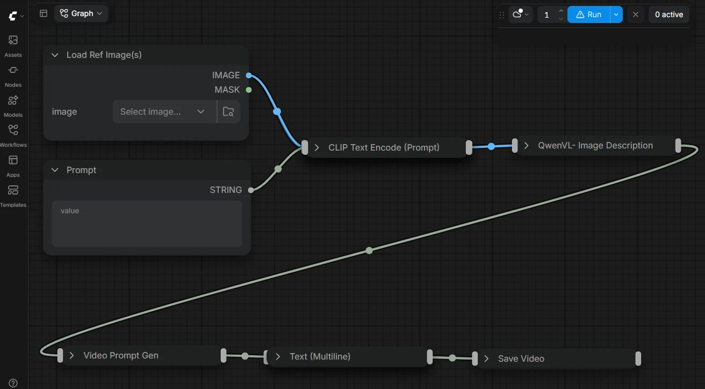

Video Ads Variation Pipeline
GLOW (RPG fashion game)
Scaling Creatives With AI
50 ads per week for winning ads or for A/B testing.
Role
- Architected ComfyUI node workflows
- Art direction and managed model fine-tuning
- Designed app frontend with user-friendly UI
Cross-functional
project team
UA Lead, UA Motion Designers, Project Manager, DevOps
Target users
UA Leads, Creative Leads, UA Motion Designers
The challenge
Translating complex ComfyUI workflows into intuitive UI for non-technical and creative users
Balancing scale, accuracy, and creative control
Creating an automation for a highly elaborate video prompting structure
System architecture
Generative AI workflow
Designed with ComfyUI
Frontend app
Designed and built with Claude Design & Claude Code

Interaction flow
-
Curated Input
Image references: generated character and background, clothing references, or generate a new character
-
Image Generation
A ComfyUI workflow is triggered with engineered prompts. A frame is generated in the structure of a gameplay frame
-
Items Selection
The user selects which clothing items will be applied; the indexes of the selected items are sent to the video generation ComfyUI workflow
-
Video Generation
A ComfyUI workflow is triggered. The workflow includes LLMs, a VL model, custom nodes and finally Seedance video generation
-
Final Video Export
Human-in-the-loop
curating and creative direction
The character, background, outfits and outro are designed by the art team
The generated content is cherry-picked
Bottlenecks and limitations
Running multi-model ComfyUI workflows requires high-VRAM GPU cloud infrastructure and a data storage solution
The generated content needs to be validated to weed out prompt drifts, glitches and artifacts
Next steps
Pushing the content to the asset manager
Each variant receives a tracking ID and is monitored for performance
Video Ads Variation Pipeline
Scaling Creatives With AI
50 ads per week for winning ads or for A/B testing.
The challenge
Generating video ad variations one by one meant tweaking a highly detailed prompt by hand, every time.
The process relies on several different models, each with its own interface, so the creatives had to keep jumping between tools to produce a single ad.
System architecture
The generative AI workflow is designed and run in ComfyUI.

Models
- FLUX.1 [dev]
- Image generation
- FLUX.2 [klein]
- Image editing
- Qwen2.5-VL
- Vision-language model that generates a description from an image
- Seedance 2.0
- Video generation
- Claude and Nano Banana
- Through ComfyUI partner nodes
- Custom node
- A node I created that edits and structures the video prompt
Human in the loop
The starting point is creative. Every run begins with a key creative asset or idea from the team
Designers cherry-pick the strongest assets from the raw output
Every output is checked. Generated content is reviewed for prompt drift, glitches and artifacts
How much is automated depends on the brief.
Enablement and support
ComfyUI workflows are too complex for most non-technical users. I turned the workflow into a simple, user-friendly web app, designed and built with Claude Design and Claude Code. After launch, I kept supporting the team and iterating on the app as they used it, adding features and onboarding new users.
Users
UA leads, creative leads, motion designers
Limitations
The generated content needs to be validated to weed out prompt drifts, glitches and artifacts
Next steps
Pushing the content to the asset manager – each variant receives a unique tracking ID and is monitored for performance